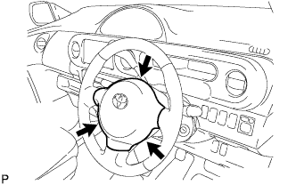

|
衝突に巻き込まれていない車両
以下の項目に該当する場合は、ホーンボタンASSYを新品に交換する。
- 基準
- ホーンボタンASSY展開面の表面および溝部分にひび割れ、へこみ、欠けがある
衝突しているがエアバツグが作動していない車両
- ■ 警 告 ■
- ホーンボタンASSYの取替作業は正しい手順で行う。
ホーンボタンASSYを取りはずし、以下の項目に該当する場合はホーンボタンASSYを新品に交換する。
- 基準
- ホーンボタンASSYのパツド表面および溝部分にひび割れ、へこみ、欠け、その他の変形がある
- コネクターおよびワイヤーハーネスにすり傷、ひび割れ、破損がある
- ホーンボタンASSYを落下させた
以下の項目に該当する場合は、ホーンボタンASSYとステアリングホイールASSYをセツトで新品と交換する。
- 基準
- ホーンボタンASSYとステアリングホイールASSYが干渉して取り付けが困難
- ホーンボタンASSYとステアリングホイールASSY取り付け時のすき間が一定でない
- ステアリングホイールASSYのブラケツト部が変形している
- ■ 注 意 ■
- ステアリングホイールASSYのブラケツト部が変形している場合、修理せず新品に交換する。
 |
  |